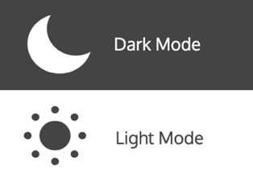
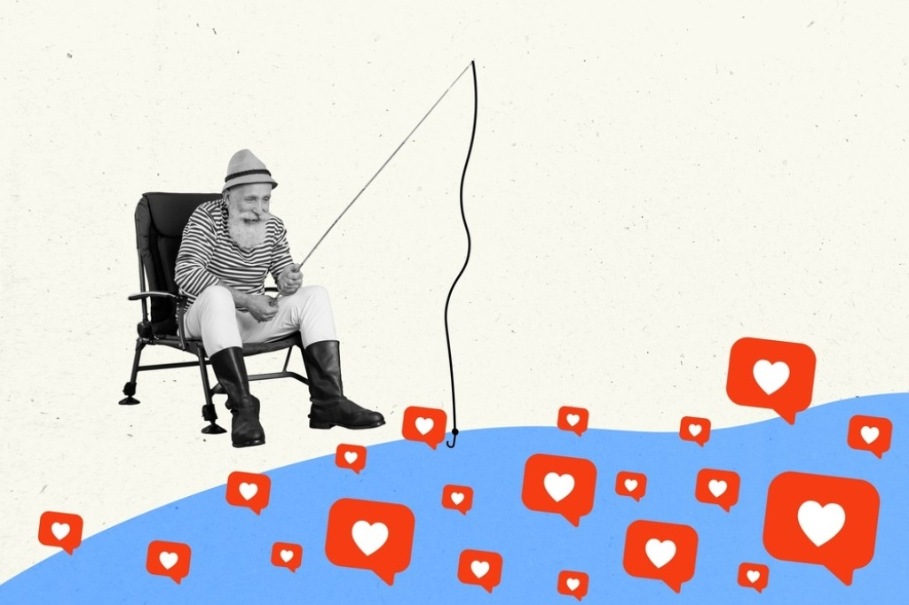
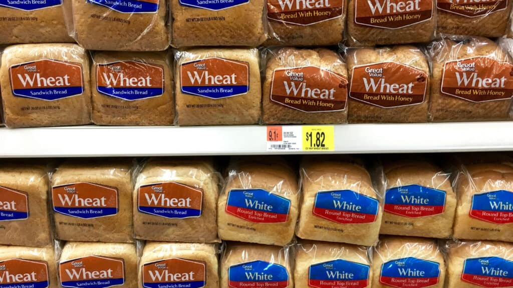
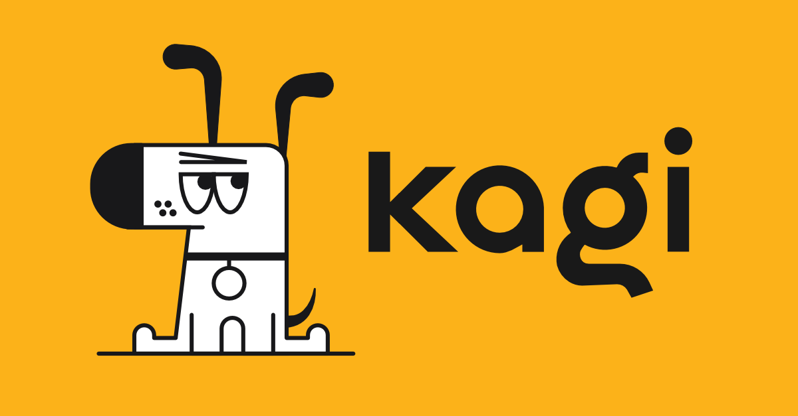
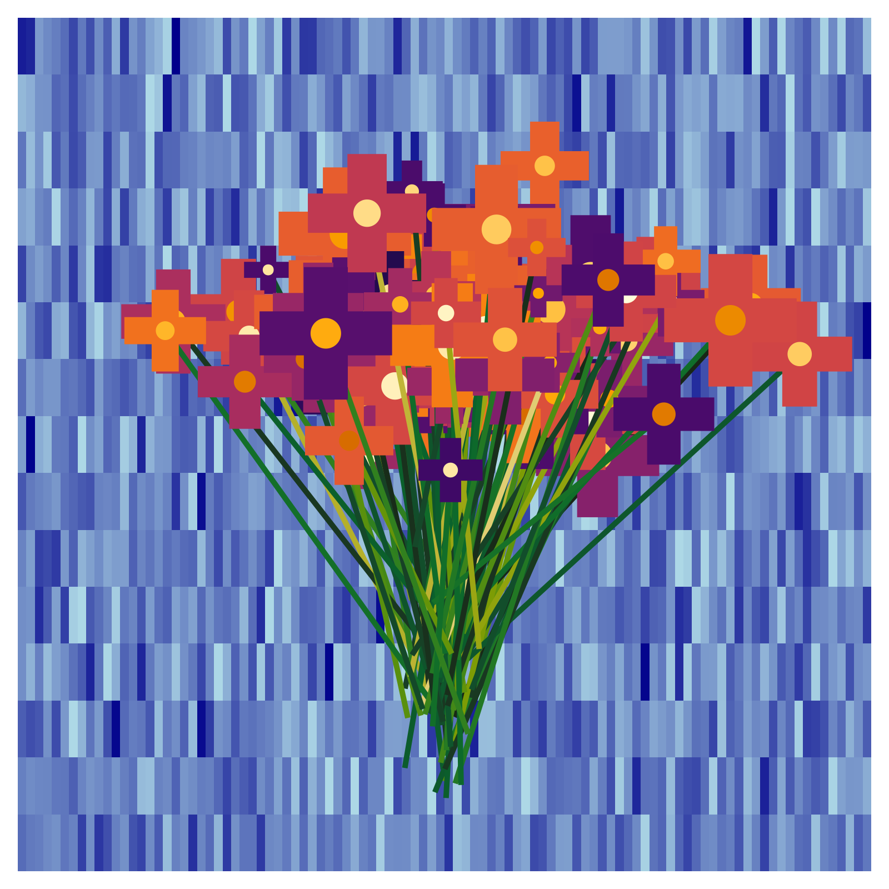
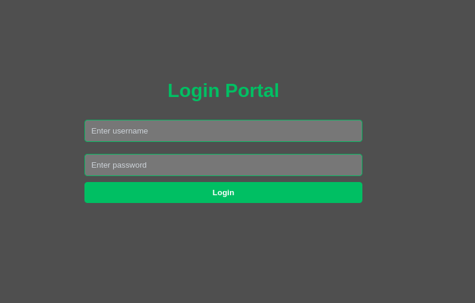
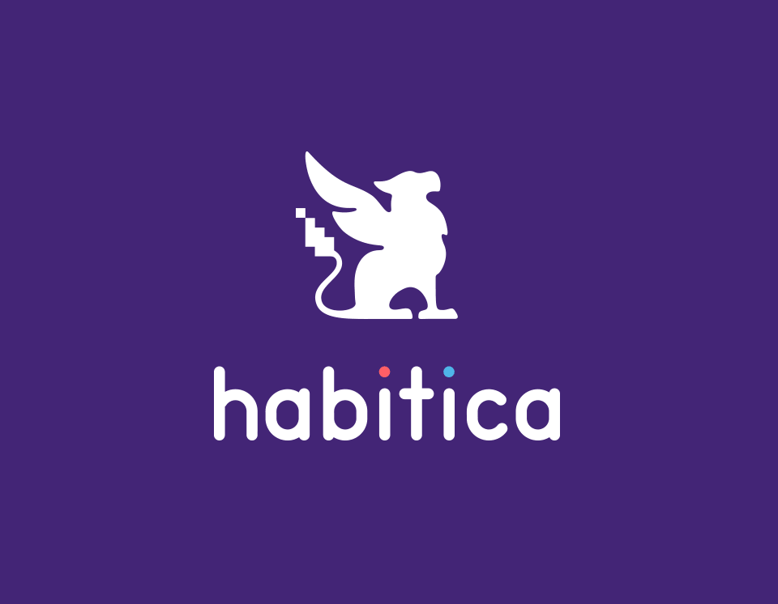

Follow my blog with RSS
Small but mighty
A shinylive experiment
Letting my inner hobby economist run loose

How I made my CV adapt to the theme of my site
A quick-and-dirty guide
Making the theme of Utterances change with the site theme
A status update on my self-experiment
My super secret curated lists

My struggle with social media
On overthinking animal documentaries and human exceptionalism
Better PDFs, website navigation via keyboard, website code injection
Scientific findings should not always influence institutional practice

Andere Länder, andere Sitten
K.I.S.S.
An intro to RevealJS with Multiplex

Kagi has a lot to offer for power-users.
I’m more annoying now.
The Fediverse is the true digital town square
Git + Bash to speed up website updates
Optimizing VS Code for Data Science
A guide for overcoming freemium limitations
My favorite features in the Vivaldi browser
My first shot at a travel blog post
Some free tools I enjoy that you might too

Random.jl + Distributions.jl + CairoMakie.jl = Flowers?
Trouble connecting? Here are some terminal commands to help you get online.
A simple template for getting started with Quarto websites
Some notes on Multiple Linear Regression
Linear regression notes in RevealJS
Some reflections and lecture notes
Fixing small annoyances with mods
A guide to setting up R for Visual Studio Code
A discussion of odd design choices and my feature wishlist
My review after 5+ years of daily use
Some simple tricks for cutting down

Personalized/Gated content on static websites

Turn your life into a video-game? It’s less questionable than you think
To google or not to google, that is the question.
A post about old technology that was ahead of its time
My take on how to make a piece of maximalist software easy on the eyes
A jumpstart guide to creating websites with Quarto
Just a quick post to test the blog and briefly talk about my first ventures into JavaScript